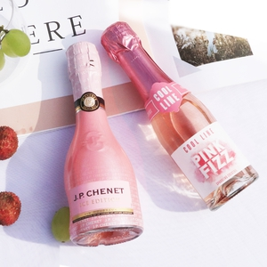
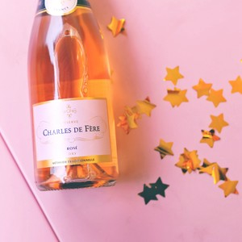
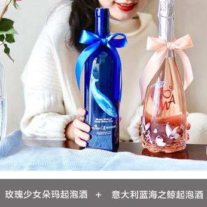
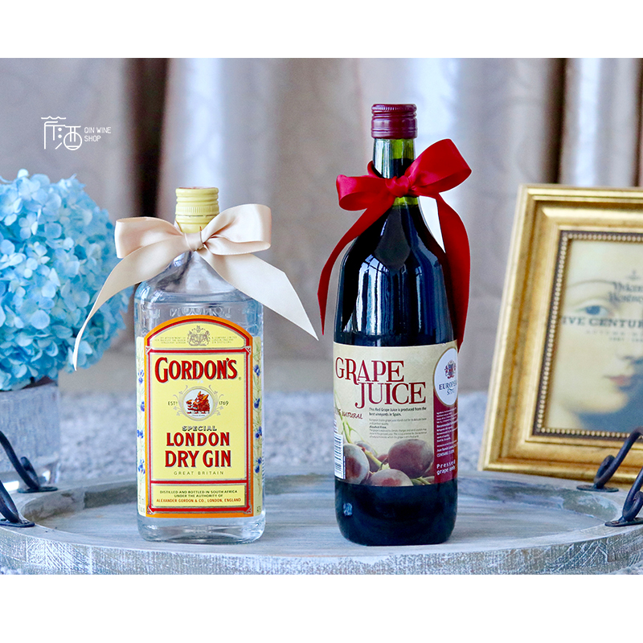

-

慕拉冰酒
慕拉冰酒蓝钻冰白葡萄酒雷司令冰葡萄酒
-

莫高红酒整
莫高红酒整箱6支装滴晶冰酒冰红冰白冰葡萄酒甜酒
-

德国雷司令葡萄酒
德国雷司令自然酒原瓶进口甜白葡萄酒
-
拉菲红葡萄酒
拉菲官方正品原装瓶进口巴斯克花园干红葡萄酒
-

圣芝红酒
圣芝红酒法国波尔多AOC银奖干红原瓶进口珍藏葡萄酒
-
法国AOP进口葡萄酒
法国AOP进口葡萄酒红酒整箱干红6支装
-
智利名庄活灵魂干红酒
智利名庄活灵魂干红酒葡萄酒浪漫礼物原装进口特级珍藏级
-
醉鹅娘红葡萄酒
醉鹅娘智利鸟酒进口干红葡萄酒中央山谷梅洛红酒
-
米勒图高雷瓦那白葡萄酒
德国原瓶进口米勒图高雷瓦那白葡萄酒半干型单支冰酒甜白红酒果酒
-->
-
干露酒庄(Concha y Toro)
干露酒庄（Concha y Toro）是智利最大的葡萄酒业集团，同时也是智利最古老的酒庄之一。
该酒庄多次荣获世界最畅销葡萄酒品牌称号，现在已经成为全球第二大最受欢迎的葡萄酒品牌。
12:25 -
白莫斯卡托(Moscato Bianco
白莫斯卡托(Moscato Bianco)典型香气：甜瓜、蜂蜜、桃子、橙花、香料、玫瑰花和柑橘
起源：白莫斯卡托（Moscato Bianco）是一个起源于希腊的葡萄品种。据说，是希腊人将白莫斯卡托传入了意大利，而罗马人则将其从意大利带到了法国地中海沿岸地区。
12:25 -
伊塔塔谷(Itata)
伊塔塔谷（Itata Valley）位于智利首都圣地亚哥（Santiago）以南400公里（约250英里）处，是智利南部三大葡萄酒产区中最靠北的一个。
伊塔塔谷的酿酒传统源远流长，早在殖民者时期，著名的海港城市康塞普西翁(Concepcion)附近就已经出现了一些葡萄园。
12:25 -
木桐酒庄（Chateau Mouton Rothschild）
位于法国波尔多（Bordeaux）梅多克产区（Medoc）的波雅克（Pauillac）村，出产享誉世界的波尔多葡萄酒。
在目前法国官方排名中，它位列波尔多五大一级庄（First Growth）之一，与拉菲古堡（Chateau Lafite Rothschild）、拉图城堡（Chateau Latour）、玛歌酒庄（Chateau Margaux）和侯伯王庄园（Chateau Haut-Brion）共享此殊荣。
12:25 -
=桃乐丝酒庄（Torres）
于1870年创建，但桃乐丝家族早在17世纪就开始在佩内德斯（Penedes）古老的加泰罗尼亚（Catalonia）镇酿造葡萄酒。
时至今日，桃乐丝已然成为西班牙最大的葡萄酒生产商，“桃乐丝”几乎成为了西班牙酒的代名词，物有所值的品质可以说是西班牙酒的荣誉标签。
12:25